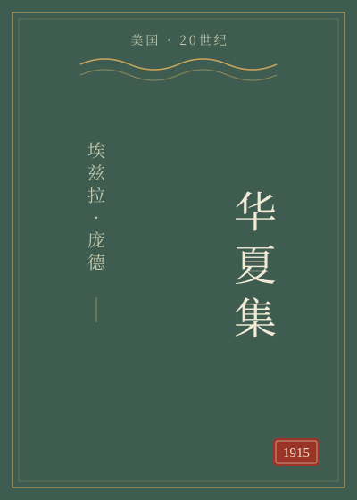

华夏集
一、基本信息
| 作者 | 庞德 |
|---|---|
| 成书/出版 | 1915年伦敦出版（Britannica 语境） Ezra Pound — Encyclopaedia Britannica（百科全书） |
| 国别/地区 | 美国 |
| 时代 | 现当代 · 20世纪 |
| 体裁 | 诗翻译集 |
| 语言 | 英语（据费诺罗萨笔记） |

《华夏集》篇目与中国诗对应图（据通说待核）（主题·结构图）
二、创作背景
来源：据 Ernest Fenollosa（费诺罗萨，美国东方学者）的中国诗歌笔记手稿翻译（Britannica：Cathay adapted from Ernest Fenollosa's papers——Britannica Ezra Pound 条）。
地位：艾略特称其为'our monument of Chinese poetry'（我们的中国诗歌纪念碑——通说待核）；'创造了一种基于英语的'中国诗'文体'——对中国诗的'现代主义'想象影响了英美诗人对中国的理解（通说待核）。
篇目：以李白为主——'The River-Merchant's Wife: A Letter'（长干行）、'The City of Choan'、'Lament of the Frontier Guard'等约19首（通说待核）。
三、内容脉络
《长干行》译为'The River-Merchant's Wife: A Letter'：'妾发初覆额，折花门前剧……十四为君妇'→'早晚下三巴，预将书报家'——以妻子口吻写商人妻子与丈夫分离——'苔深不能扫，落叶秋风早'的意象被庞德转化为英语自由诗（通说待核）。
《在长安》（The City of Choan，原《古诗十九首》？——待核）与《边防战士的哀歌》（Lament of the Frontier Guard）——边塞诗的英译。
其他：《胡关饶风沙》（李白）、《送友人之扬州》等——庞德的'再创造'翻译。
四、主要人物表
| 人物 | 身份 | 说明 |
|---|---|---|
| 庞德（译者） | 现代主义诗人 | 以'意译/再创造'而非'学术翻译'方式——误读也是创造（通说） |
| 李白等 | 被翻译的中国诗人 | 李白为主——'中国诗歌的英国化身'（通说） |
五、主题与艺术特点
- '发明'中国：Cathay 不是中国而是庞德的'中国'——翻译即再创造（通说）。
- 现代主义的中国想象：以中国诗的简洁/意象'纠正'维多利亚冗长（通说）。
- 误读的诗学：'分离'（separation）是全书的统一主题（庞德自述——通说待核）。
六、影响与评论
- Britannica（Pound 条）：Cathay adapted from Ernest Fenollosa's papers——'开创英美现代主义与中国诗的相遇'（通说待核）。
Ezra Pound — Encyclopaedia Britannica（百科全书） - 艾略特'中国诗歌纪念碑'评语（通说待核）。
Ezra Pound — Encyclopaedia Britannica（百科全书） - 对中国诗英译的影响：庞德之后'Cathay model'成为英译中国诗的范式（通说待核）。
Ezra Pound — Encyclopaedia Britannica（百科全书）
七、阅读建议
难点
- 英译与中国原诗的对照——找出庞德的'误读'与'发明'。
- 费诺罗萨笔记的日语转译问题（双重的'翻译之翻译'——通说待核）。
- Cathay（1915 London：Elkin Mathews，通说待核）。
- 中译参考：《庞德诗选》（人民文学/湖南文艺，通说待核）。
先读'The River-Merchant's Wife'并对照李白《长干行》原文 → 读全部19首 → 讨论'误读的诗学'。
八、待核实
- 1915年出版（Elkin Mathews，通称）细节待核。
- 篇目完整清单（19首 vs 不同版差异）待核。
- '长干行'原诗与英译对照逐句待核。
- 费诺罗萨笔记保存地点与学术研究待核。
本页主要来源
庞德的其他收录作品：华夏集